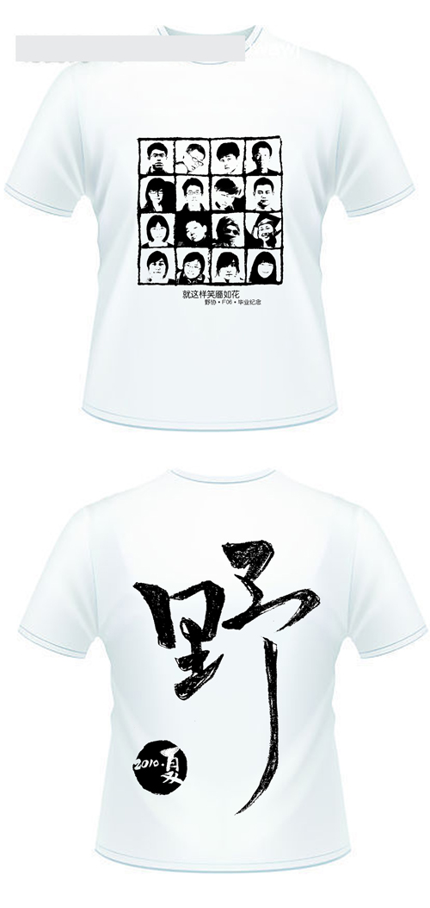

发信人: onioncc (我是PCB·葱葱葱葱葱), 信区: outdoor
标 题: 【合集】T恤最终板，发了我就拿去制版了
发信站: 饮水思源 (2010年06月12日17:18:07 星期六), 站内信件
☆──────────────────────────────────────☆
tiniu (踢牛) 于 2010年06月11日10:01:59 星期五)
提到：
 screen.width - 200){this.width = screen.width - 200}">
终于可以安心做毕设了...
☆──────────────────────────────────────☆
syao (1221) 于 2010年06月11日10:03:08 星期五)
提到：
顶啊顶
【 在 tiniu 的大作中提到: 】
: http://bbs.sjtu.edu.cn../htm/pics/127622169899721.jpg
: 终于可以安心做毕设了...
☆──────────────────────────────────────☆
HYP (孤行) 于 2010年06月11日10:04:12 星期五)
提到：
嘿嘿~ 我怎么跑到第一个去了,高兴~ 哈哈!
【 在 tiniu 的大作中提到: 】
: http://bbs.sjtu.edu.cn../htm/pics/127622169899721.jpg
: 终于可以安心做毕设了...
☆──────────────────────────────────────☆
tiniu (踢牛) 于 2010年06月11日10:05:19 星期五)
提到：
...因为lcc那个头像是斜的，放角上不好看，出于整体效果考虑
【 在 HYP 的大作中提到: 】
: 嘿嘿~ 我怎么跑到第一个去了,高兴~ 哈哈!
☆──────────────────────────────────────☆
HYP (孤行) 于 2010年06月11日10:07:06 星期五)
提到：
话说佳姐为什么换了这个头像呢～眼神太犀利了～我还是喜欢原来的那个。。
【 在 tiniu 的大作中提到: 】
: http://bbs.sjtu.edu.cn../htm/pics/127622169899721.jpg
: 终于可以安心做毕设了...
☆──────────────────────────────────────☆
tiniu (踢牛) 于 2010年06月11日10:11:40 星期五)
提到：
佳姐的特点是啥？就是眼神！
【 在 HYP 的大作中提到: 】
: 话说佳姐为什么换了这个头像呢～眼神太犀利了～我还是喜欢原来的那个。。
☆──────────────────────────────────────☆
TitanScorpio (野协·我要周游世界) 于 2010年06月11日11:29:10 星期五)
提到：
大爱U+的怨念之眼啊
【 在 tiniu 的大作中提到: 】
: 佳姐的特点是啥？就是眼神！
☆──────────────────────────────────────☆
sqlbob (Aquarius·球·剑为情折·EE·流光溢彩) 于 2010年06月11日12:21:07 星期五)
提到：
ly好正太啊..........
【 在 tiniu 的大作中提到: 】
: http://bbs.sjtu.edu.cn../htm/pics/127622169899721.jpg
: 终于可以安心做毕设了...
☆──────────────────────────────────────☆
yinmy (杨杨) 于 2010年06月11日15:11:40 星期五)
提到：
ly在哪里……
我是脸盲么……
【 在 sqlbob 的大作中提到: 】
: ly好正太啊..........
☆──────────────────────────────────────☆
lcc (野·剑者天行) 于 2010年06月11日20:52:50 星期五)
提到：
re
【 在 yinmy 的大作中提到: 】
: ly在哪里……
: 我是脸盲么……
☆──────────────────────────────────────☆
xusong (神雕大侠) 于 2010年06月11日22:39:48 星期五)
提到：
佳姐知道忠言逆耳啊 果断换回本色照了 赞！
【 在 tiniu 的大作中提到: 】
: http://bbs.sjtu.edu.cn../htm/pics/127622169899721.jpg
: 终于可以安心做毕设了...
|